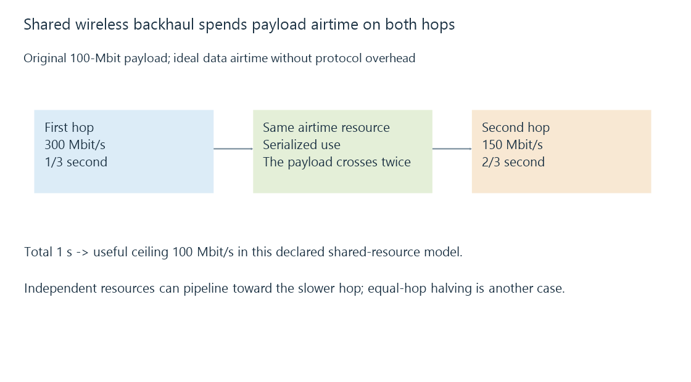

Wireless backhaul and repeated airtime
Wireless backhaul carries access-point traffic toward the rest of the network, with repeated use of a shared radio resource affecting end-to-end capacity.
An access point can give the television a good nearby signal while reaching the wired server through another wireless hop. That second hop is its wireless backhaul.
The stream must traverse both links. If they use one shared airtime resource, each delivered payload consumes that resource again.
Two shared hops add their airtime
Use this original idealized exercise:
{
"payloadMbit": 100,
"firstHopMbitPerSecond": 300,
"secondHopMbitPerSecond": 150,
"sharedAirtimeResource": true
}
The first transmission needs one third of a second. The second needs two thirds. Their serialized data airtime totals one second for one hundred Mbit of delivered payload.
The ideal useful rate is therefore one hundred Mbit/s before protocol overhead and competing traffic.

For rates C1 and C2 in this shared-resource model, the ceiling is 1 / (1/C1 + 1/C2).
With equal three-hundred-Mbit/s hops it becomes 150. With the declared unequal hops it becomes one hundred, rather than automatically half of either single reported rate.
Independent resources allow another pipeline
Suppose the two hops can use independent radio resources and forward a long stream concurrently.
Its continuous ideal rate can then approach the slower one-hundred-fifty-Mbit/s hop, after accounting for pipeline startup and other work. That is another resource model.
Separate channel labels do not alone establish complete independence. Shared hardware, interference and device scheduling can create other contention.
Likewise, a product’s use of a dedicated backhaul capability needs its actual configuration and client path checked.
Several clients share the backhaul too
The backhaul can carry traffic for multiple viewers, library browsing and other devices. Their payloads consume its available service, while each client-facing link adds its own airtime demand.
A capacity estimate for one isolated client is therefore different from an estimate while several rooms stream.
A changing backhaul link can also alter the end-to-end path while the TV’s immediate RSSI stays almost unchanged.
A wired backhaul removes this particular repeated-radio model
An Ethernet connection between access point and the rest of the network can move that hop onto another resource.
It still has a negotiated link rate, switch path and other demand. It does not eliminate every possible bottleneck or fix an application access failure.
See Also
- Wi-Fi signal quality, noise and useful airtime
- How a home media network carries an Emby stream
- Network throughput and useful delivery rate
- Network congestion and competing arrival rates